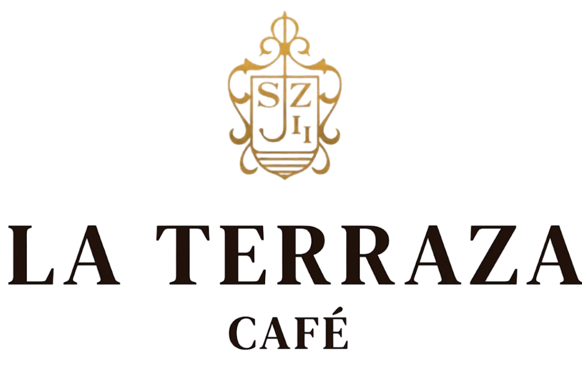
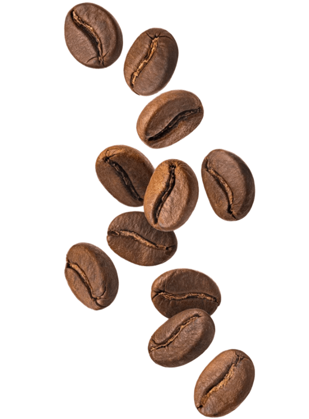
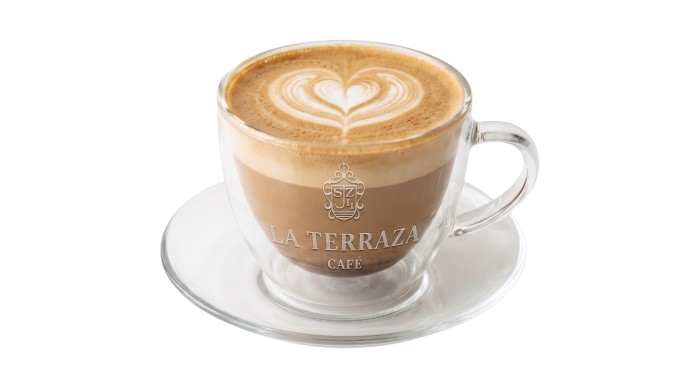

El arte de cada sorbo.


Continúa explorando
La Terraza Café
Nuestra historia
La Terraza Café surgió para aquellas pláticas largas y satisfactorias con tus seres queridos. Y ¿por qué no? acompañarla con tu buen café, bebida o snack favorito.